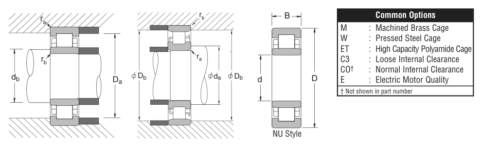

234 is a NSK cylindrical roller bearing, bore 170 mm, O.D. 310 mm, width 52 mm, dynamic rating 107,000 lbs. Dimensions, drawing, interchanges and price.
Original catalogue drawing - NSK catalogue, page 53

Scanned from the manufacturer catalogue page listing this part number. All part numbers printed on that table share the same drawing.
Scale cross-section
Blue = inner / outer ring, yellow = rolling element. Drawn to scale from this part's own
dimensions for selection reference only - not a manufacturing or assembly drawing.
Dimension table (mm / inch)
Symbol
Dimension
mm
inch
d
Bore diameter
170
6.6929
D
Outside diameter
310
12.2047
B
Inner-ring / bearing width
52
2.0472
Notes
Cylindrical roller entries from the NSK inch catalogue are series numbers covering the N / NU / NJ / NUP / NH prefixes of the same size. Weights are given in kg. Load ratings are shown in both the original catalogue units and the converted value (1 N = 0.2248 lbf). Data is provided for selection reference only - confirm against the latest official catalogue before ordering.
Main dimensions
Bore d (mm)
170
Bore d (in)
6.6929
Outside dia. D (mm)
310
Outside dia. D (in)
12.2047
Width B (mm)
52
Width B (in)
2.0472
Load ratings & speeds
Basic dynamic load rating Cr (lbs)
107000
Basic static load rating Cor (lbs)
143000
Limiting speed - grease (rpm)
2,000
Limiting speed - oil (rpm)
2,400
Weight
Weight (kg)
18.144
Mounting dimensions (fillets / shoulders)
Fillet ra max (in)
0.118
Fillet rb max (in)
0.118
Shaft shoulder da min (in)
7.402
Housing shoulder Da max (in)
11.575
Shaft shoulder db min (in)
7.323
Shaft shoulder db max (in)
7.992
Housing shoulder Db min (in)
10.945
Housing shoulder Db max (in)
11.575
Bearing life (ISO 281 basic rating life)
C / P
Equivalent load P (N)
L10 (106 rev)
L10h at 600 rpm
4
118,990
102
2,822
6
79,327
392
10,903
8
59,495
1,024
28,444
10
47,596
2,154
59,845
15
31,731
8,323
231,207
Basic rating life per ISO 281: L10 = (C/P)10/3 with C = 475,960 N. Hours = L10 x 106 / (60n). Life-modification factors for lubrication, contamination and temperature (aISO) are not included.
Source & traceability
Brand
NSK
Source catalogue
NSK inch product catalogue
Catalogue page
p.55 (dimensions) / p.56 (ratings)
Dimensions in inches and millimetres, load ratings in lbs.
Send us the quantity you need and we will come back with price and
lead time, normally within 24 hours. Equivalent parts from other brands can be quoted at the same time.